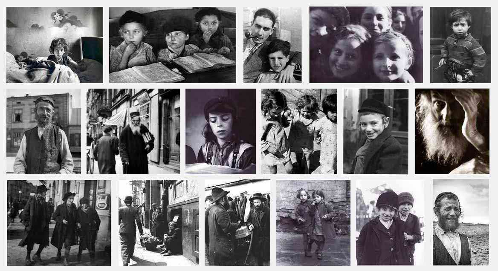

Turn Us, and We Shall Be Turned!
I look through old family photographs of people whose names I do not know, nor where or when they lived. I look at them closely, the way one looks at close relatives in a thick family album with velvet covers and an embossed plate.
15 Return, we beseech Thee, O God of hosts: look down from heaven, and behold, and visit this vine;
16 and the vineyard which Thy right hand hath planted, and the branch that Thou madest strong for Thyself.
Ps. 80:14–15 (Heb. 80:15–16)
15 אֱלֹהִים צְבָאוֹת שׁוּב־נָא הַבֵּט מִשָּׁמַיִם וּרְאֵה וּפְקֹד גֶּפֶן זֹאת׃
16 וְכַנָּה אֲשֶׁר־נָטְעָה יְמִינֶךָ וְעַל־בֵּן אִמַּצְתָּה לָּךְ׃
15 ELOHIM TSVAOT SHUV-NA HABET MI-SHAMAYIM URE'E UFKOD GEFEN ZOT
16 VE-KHANA ASHER-NATA YEMINEKHA VE-AL-BEN IMATSTA LAKH
The clip uses musical interpretations of the weekly Torah portions by the Israeli composer Daniel Kruglov.
My heart aches at the thought of the fate of many of these relatives of mine, who perished, who disappeared, who did not see God's mercy in answer to the age-old dream and prayer "ba-shanah ha-ba'ah bi-Yerushalayim" (next year in Jerusalem).
Here it is, Israel, in spite of all the attempts to wipe it off the map. Here it is, the home promised by the Most High to our fathers and to us! And though our joy today is mixed with a little sadness, our joy is great, and thanks be to God, He has not forsaken His people.
Roman Solomonovich Vishniac (photographer, 1897–1990):
"I could not save my people, I could only save their memory. A hidden camera for photographing a people who did not want to be photographed may seem strange to you. Was it madness to cross borders again and again, risking my life each time? Whatever the question, the answer is always the same: it had to be done. I felt that the world would be seized by the mad shadow of Nazism and that this would lead to the destruction of the people, so that not a single witness would remain who could recall the suffering. I knew that I had to make sure that this vanishing world was not wiped out completely."

Lam. 5:21
Turn Thou us unto Thee, O LORD, and we shall be turned; renew our days as of old.
הֲשִׁיבֵנוּ יְהוָה אֵלֶיךָ וְנָשׁוּבָה חַדֵּשׁ יָמֵינוּ כְּקֶדֶם׃
HASHIVEYNU ADONAY ELEYKHA VE-NASHUVA. HADESH YAMEYNU KE-KEDEM
Author: Ephraim Kalish / Torah-Art
 Ministry in Yaroslavl
Ministry in Yaroslavl Pesach: Matzah Dishes by Misha Rubin
Pesach: Matzah Dishes by Misha Rubin Videos on the Shofar (Rosh Hashanah)
Videos on the Shofar (Rosh Hashanah)